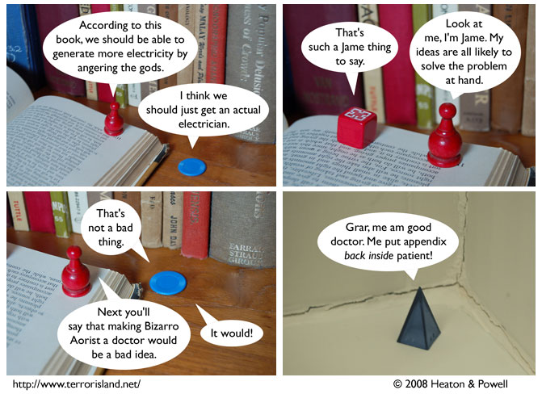

Strip #291
— Monday, April 21, 2008
Bizarro Aorist *not* wear white coat for doctor work!
Notes, Thoughts, &c.
Ben’s Notes
The identity of the prop I used to represent the book they’re reading is not at all important to the comic in a plot sense. Just theme.
Lewis’s Notes
Look forward to our forthcoming spinoff, “Dr. Bizarro Aorist” featured above. He is not to be confused with “Bizzaro Dr. Aorist” who would actually be a beekeeper, since keeping bees is the opposite of being a medical professional.